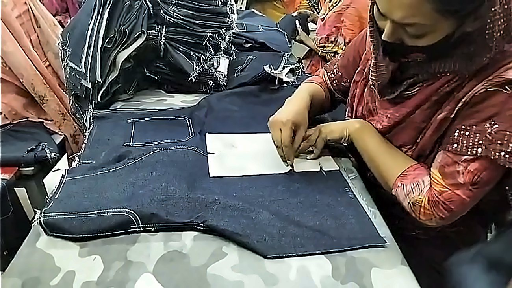
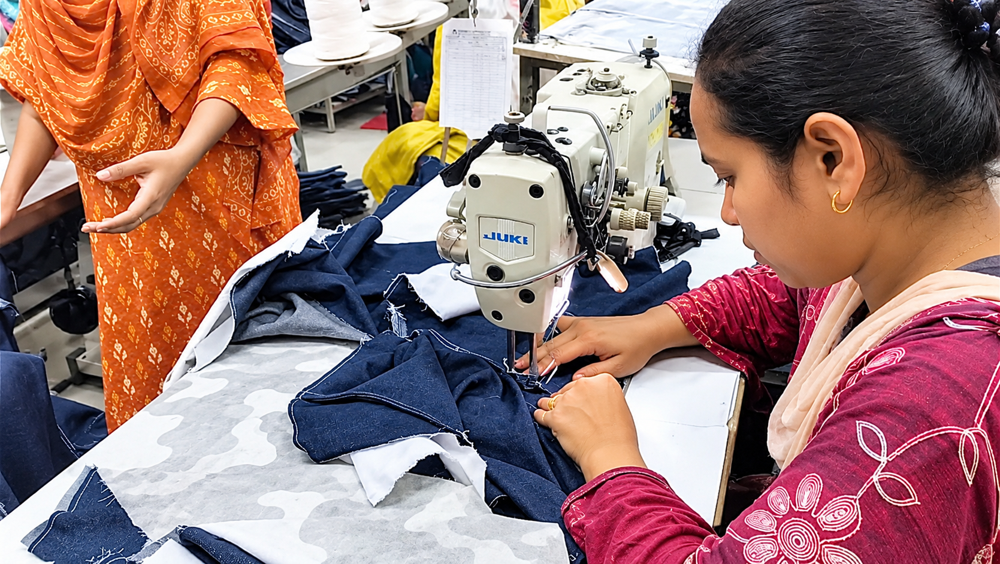
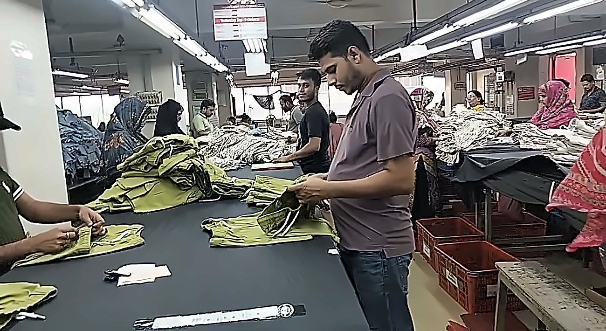
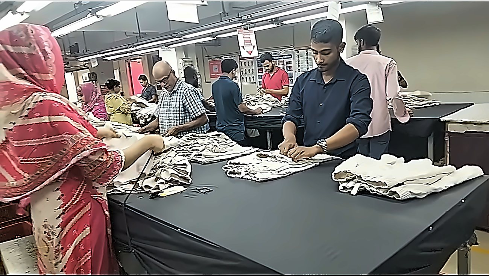

Panels are cut to pattern, then pockets are set with templates.
Placement stays identical across the whole lot.

Operators work on industrial Juki machines.
Seams and topstitching are checked along the line.

Every piece is checked by hand for stitching and finish.
Measurements are audited against your spec sheet.

Garments are folded, tagged and counted.
Packed to your instructions, ready to ship.